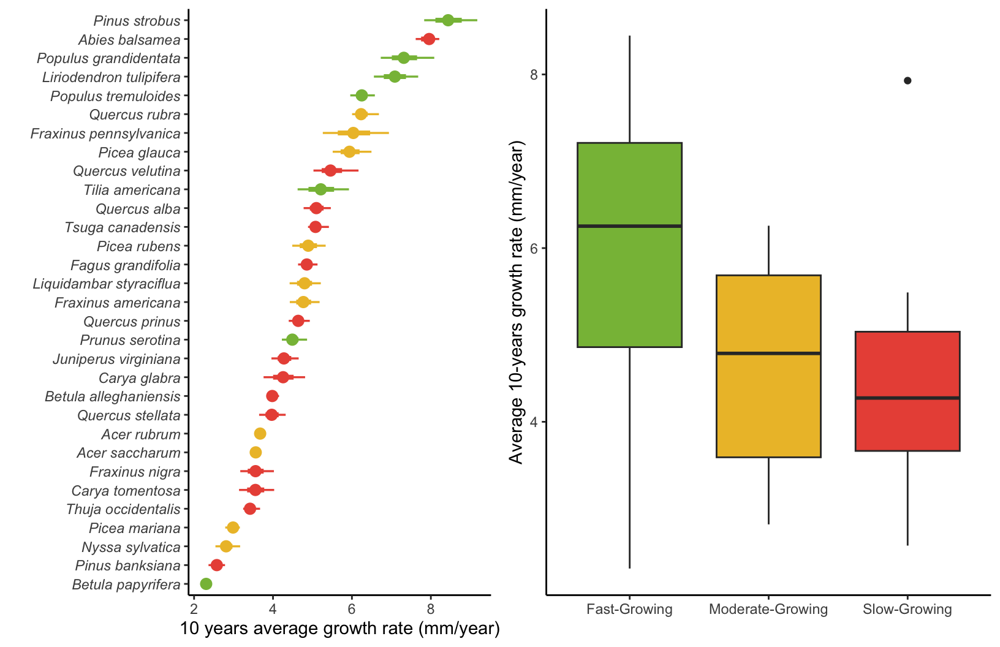
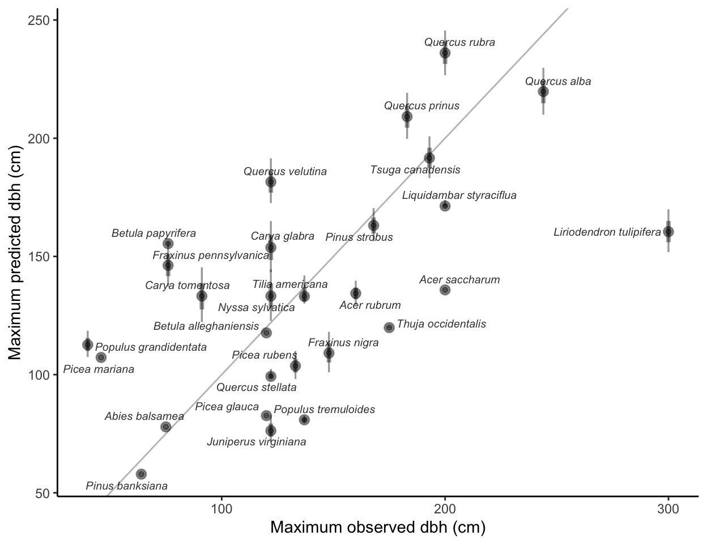
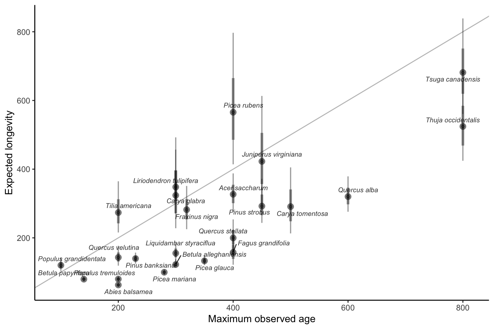
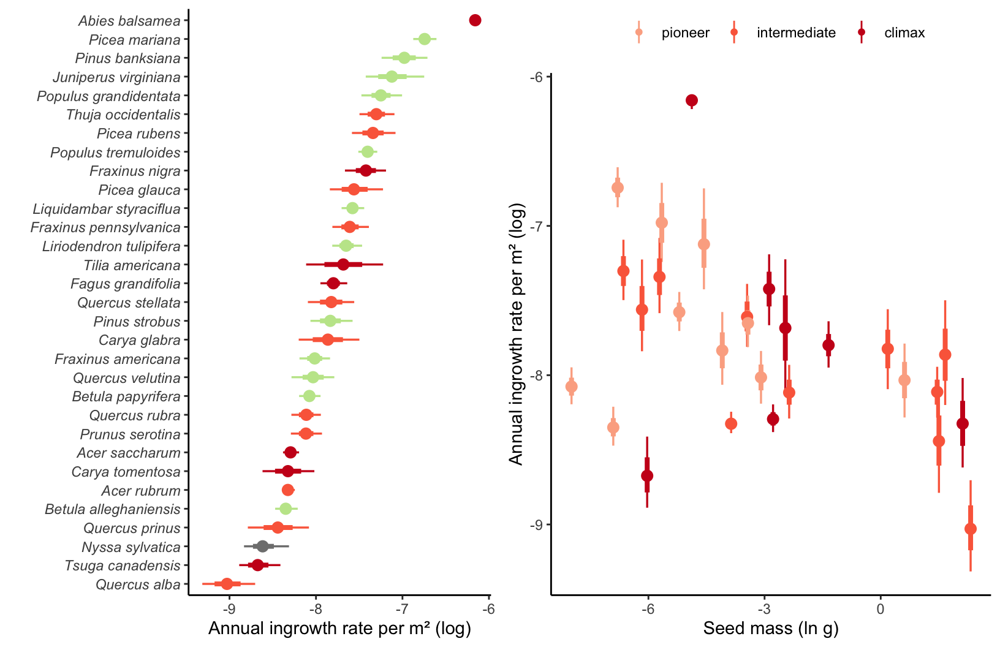
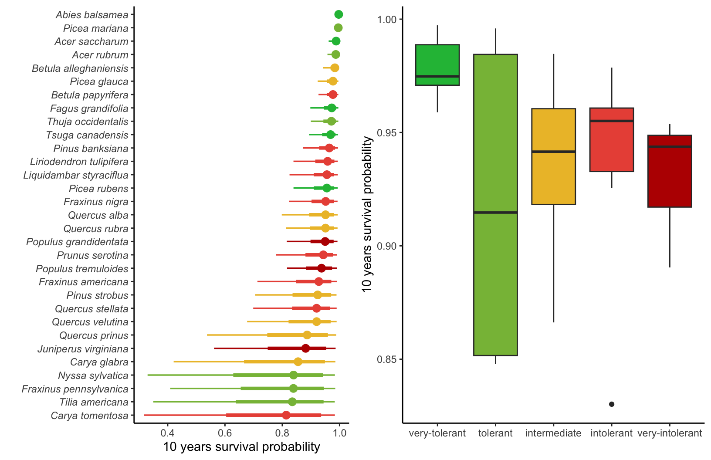

8 Intercept
This chapter evaluates the intercept of the growth, survival, and recruitment models. We use trait information extracted from the literature to compare the average estimation for each demographic model. The traits of growth classes, maximum observed size, maximum observed age, and shade tolerance are extracted from Burns, Honkala, et al. (1990), while the seed mass comes from Dı́az et al. (2022).
Growth rate
Because the growth rate intercept decreases non-linearly with size and is governed by the interaction of two parameters (\(\Gamma\) and \(\zeta_{\infty}\)), we computed the average growth rate over a 10-year interval. Also, because the size of the individual is integrated into the Von Bertalanffy growth model, we computed the 10-year growth average starting from the lower size threshold of 12.7 cm, where growth is optimal.

The following figure compares the maximum observed size in the literature with the asymptotic size (\(\zeta_{\infty}\)), denoting the size where the growth rate converges to zero.

Mortality probability
Similar to the growth rate, the survival model has a temporal component in which survival probability (\(\psi\)) decreases exponentially with time. So, we computed the 10-year average mortality probability as the intercept for the survival model.
Alternatively, we can also use the parameter \(\psi\) to derive the expected longevity (\(L\)), which can be determined as \(L = e^{\psi}\). The Figure 8.4 correlated the maximum size observed in the literature (Burns, Honkala, et al. 1990) with longevity (\(L\)).

Ingrowth rate
The ingrowth model comprises two intercept components: the annual ingrowth rate per square meter (\(\phi\)) and the annual survival probability \(\rho\). In the context of the survival submodel for the ingrowth rate, we computed the 10-year survival probability of ingrowth individuals just like in the survival model.

